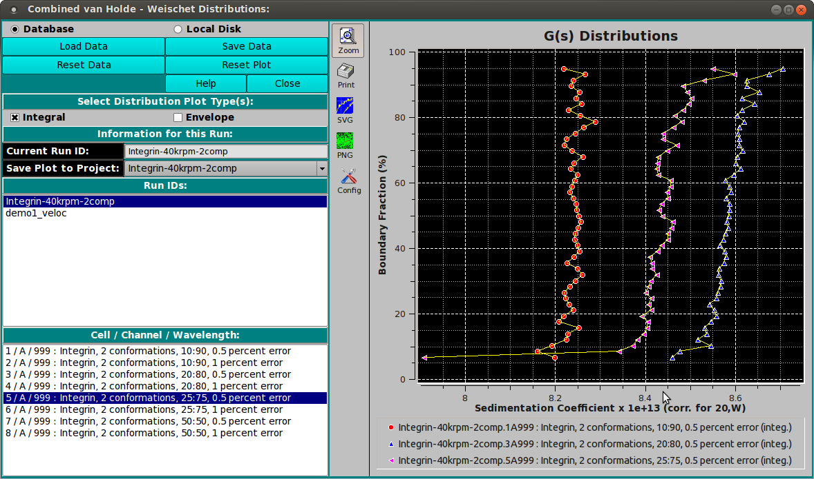
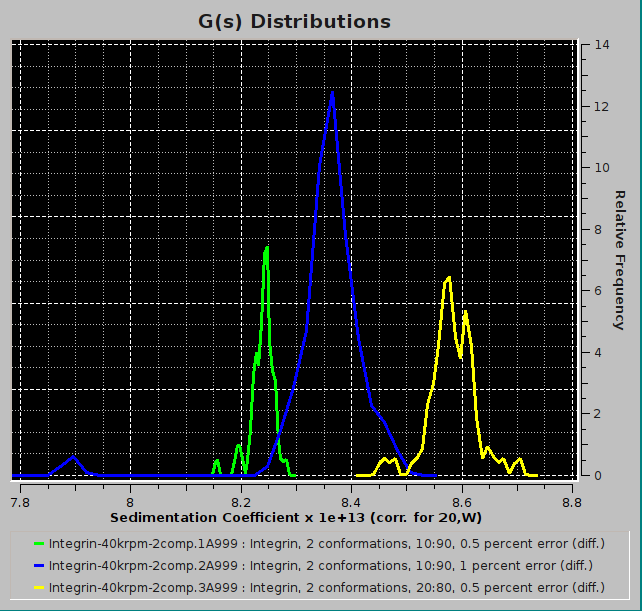
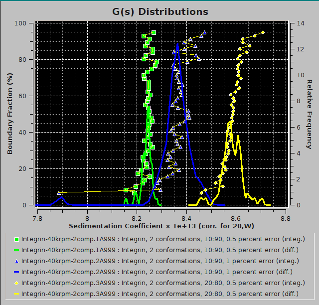

Manual
Manual
Manual
Manual
Index

To combine integral van Holde - Weischet G(s) distributions from multiple datasets (either from different cells of the same run or from different runs), use "Combine Distribution Plots (vHW)" from the Utilities menu. This will allow you to compare integral distributions from different cells to each other. This may be useful if you analyzed the same sample under different conditions; for example, different pH levels or different concentrations. If the samples are the same, the distributions should overlay; if the samples behave differently, the distributions will be shifted relative to each other.
All distributions will be plotted relative to the boundary fraction used in analysis. For example, if you analyzed 100% of the boundary, the distribution will range from 0 % to 100 % of the Y-axis. A distribution that was analyzed for 72 % of the boundary, shifted 8 % from the bottom will be plotted from 8 % to 80 % of the Y-axis. It is important that this distinction be made, since, for example, concentration-dependent samples will behave differently depending on the position in the boundary; or heterogeneous samples will show different distributions depending on which portion of the boundary was analyzed.
When data are loaded, arrays of X,Y distribution and envelope values are read and saved. These are then used to quickly display plots. If you want to change the mix of data plotted, you may click the Reset Plot button; and then quickly make new selections that are plotted without need for recalculations.
Return to IndexBesides the integral distribution plots shown above, you may display envelope plots.

You may also combine both integral and envelope plots in a single plot.
